Candidate List 20260625Previous Day Next Day
Section 1: New Sources (age<1d) Section 2: Old (1-5d) sources observed last nightplaceholder
Section 1: New Afterglow/FBOT Cands Last Night (1)
1. ZTF26abdusca (FBOT?) [Back to Top] [Share] [Trigger Swift] [Fritz] [Lasair]RA, Dec: 283.46275, 59.89637 18h53m51.06s, 59d53m46.92sGalactic (l, b): 89.93374, 22.94085 ext(g-r) = 0.057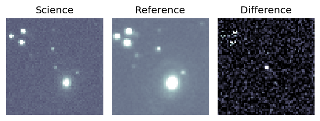
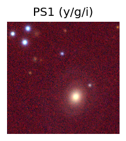
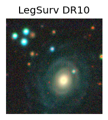
TESS: Sectors [ 14 15 16 17 18 19 20 21 22 23 24 25 26 40 41 47 48 49
50 51 52 53 54 55 56 57 58 59 60 73 74 75 76 77 78 79
80 81 82 83 84 85 86 117 118 119 121]
PS1: 0 sources in 3 arcsec
LegacySurvey: 1 sources in 3 arcsec Closest: d = 2.36 arcsec, 128.3 deg (east of north) photoz=0.13 (68% bounds 0.02, 0.46), type=REX peak abs mag = -19.66 (68% bounds -15.46, -22.67)
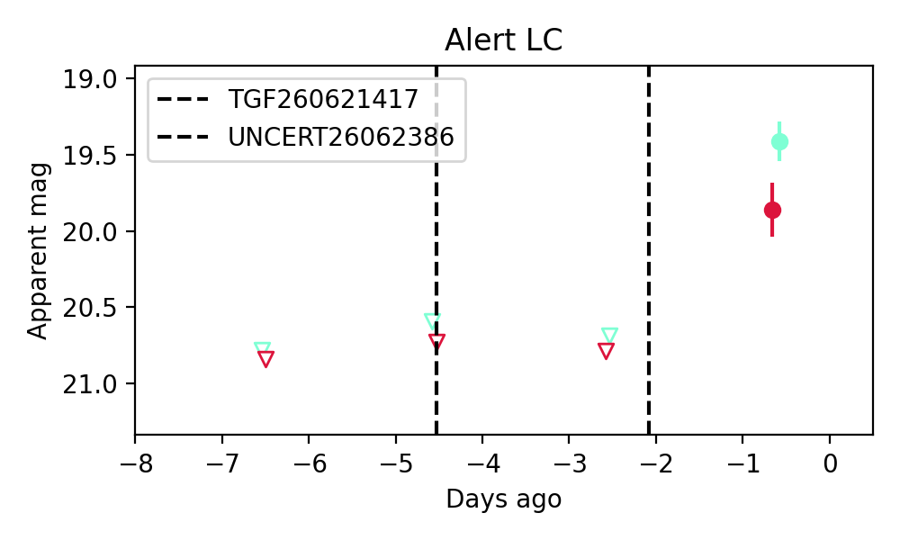
Extinction-corrected gr color:
From alerts: -0.5 +/- 0.22 mag
Rise Rate:
g: 0.65 mag/day
r: 0.49 mag/day
i: -99 mag/day
Fade Rate:
g: -99 mag/day
r: -99 mag/day
i: -99 mag/day
Section 2: Older Sources Observed Last Night (2)
0. ZTF26abdsupu (Afterglow?) [Back to Top] [Share] [Trigger Swift] [Fritz] [Lasair]RA, Dec: 275.65651, 18.18831 18h22m37.56s, 18d11m17.93sGalactic (l, b): 46.27098, 14.37969 ext(g-r) = 0.235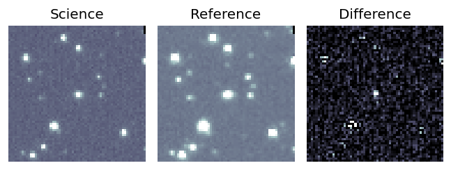
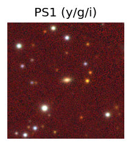
TESS: Sectors [26 40 53 80]
PS1: 1 source in 3 arcsec Closest: d = 0.68 arcsec photoz=0.17+/-0.64 peak abs mag = -20.29
LegacySurvey: 0 sources in 3 arcsec
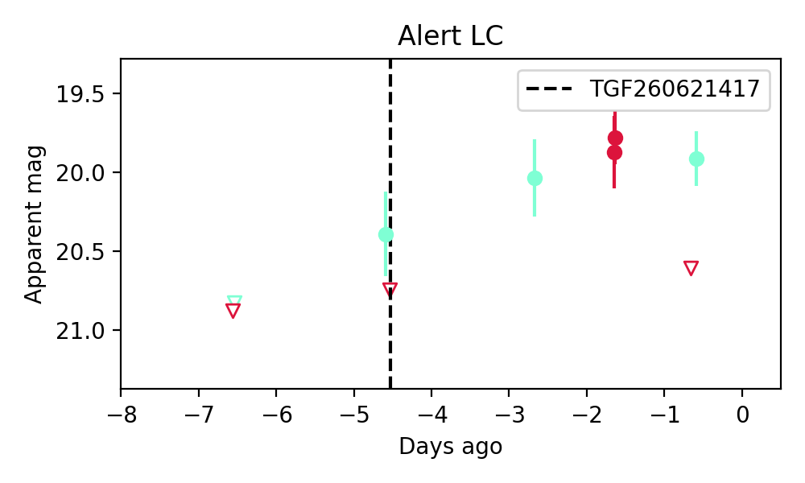
Extinction-corrected gr color:
From alerts: -0.93 +/- 99 mag
Rise Rate:
g: 0.2 mag/day
r: 0.33 mag/day
i: -99 mag/day
Fade Rate:
g: -99 mag/day
r: 0.84 mag/day
i: -99 mag/day
1. ZTF26abdwume (FBOT?) [Back to Top] [Share] [Trigger Swift] [Fritz] [Lasair]RA, Dec: 352.51743, 11.32152 23h30m4.18s, 11d19m17.49sGalactic (l, b): 93.08077, -46.77992 ext(g-r) = 0.068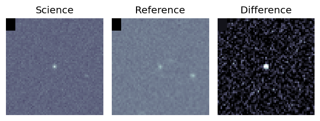
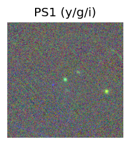
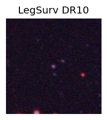
TESS: Sectors [56 83]
SDSS (<15 kpc):Found SDSS phot-z: z=0.31; peak abs mag = -21.54
PS1: 0 sources in 3 arcsec
LegacySurvey: 1 sources in 3 arcsec Closest: d = 0.38 arcsec, 148.9 deg (east of north) photoz=0.24 (68% bounds 0.17, 0.29), type=REX peak abs mag = -20.67 (68% bounds -19.79, -21.17)
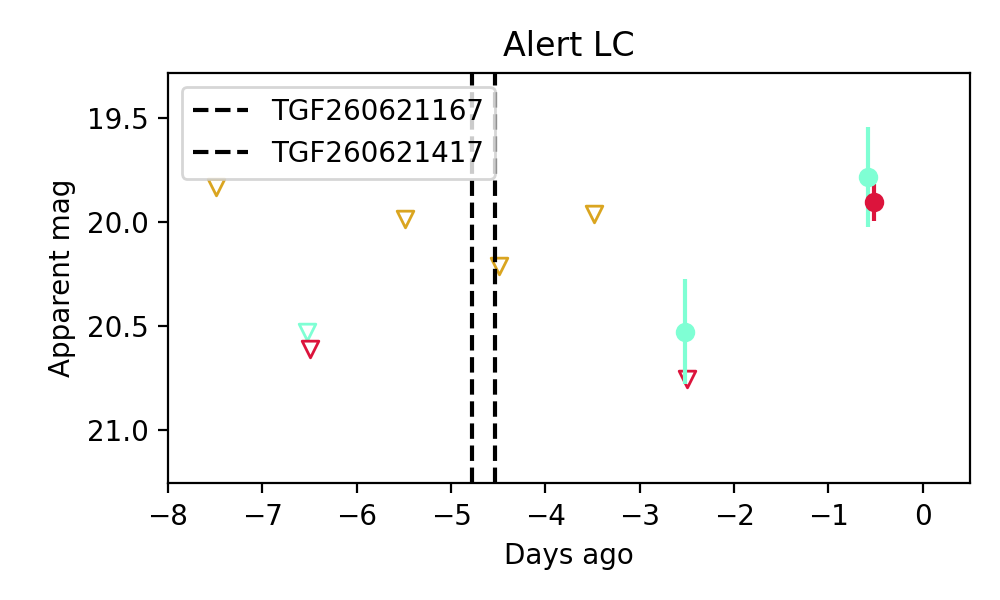
Extinction-corrected gr color:
From alerts: -0.19 +/- 0.25 mag
Consistent with synchrotron, g-r>0!
Rise Rate:
g: 0.38 mag/day
r: 0.43 mag/day
i: -99 mag/day
Fade Rate:
g: -99 mag/day
r: -99 mag/day
i: -99 mag/day